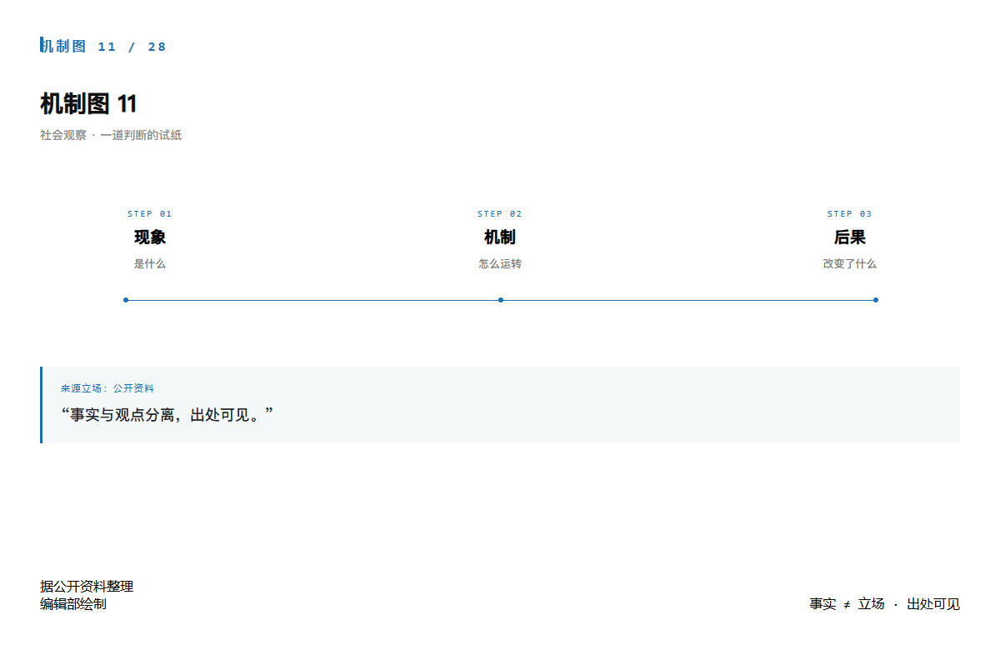

有些话，不知什么时候起不用证明了
社会观察 · 一道判断的试纸
「这还需要说吗？」有人打出这六个字，对方就不好再问了。
这类句式没有权威统计。下面的判断来自公共表达里的高频语料，和对举证规则变化的归纳：例子指向句式本身，不指向任何具体观点或群体。观点的是非不在这里裁决，这里只看论证有没有被跳过。引文照抄网络惯用表达，具体事件不碰。
但这事和今天的你，有关系。你每天都会遇到不用证明就默认成立的话，你很可能也在无意中用过。它们省下的那一步论证，最后总要有人替它付账。
有个简单的试纸：质疑它的时候，是谁需要额外解释。起先，提出判断的人举证，说「我认为甲，理由是乙」；后来换成质疑判断的人举证，说「你怎么连这都不认」。包袱换人的那一刻，判断就从观点变成了常识。
这个变化不发生在一个日期上，发生在无数次跳过论证的复现里。「都这个年代了」「懂得都懂」「不会吧不会吧，还有人不知道」——这些句子的功能不是陈述，是关闭讨论，把在场的人分成自己人和落伍者。
回到两性冲突这类议题，语料里能看到几种免论证的起点：一方默认是被害方，不需要交代依据；「闹成这样总有原因」直接当成归因；「你先自证清白」被当成程序之外的道德义务。这些判断未必都错，有的在经验里可能常常成立。
问题不在对错，在免论证。免论证意味着例外没有语料空间，反例要自己掏举证成本。前面说过，算账的人会退场，这里就是退场的入口。一个不需要证明的判断，等于告诉持反例的人：你连开口的资格都要先申请。
📌 一个值得记住的判断
举证的包袱落在谁身上，决定了讨论的地面归谁。包袱一旦倒置，观点就悄悄变成了常识，连反对的人都要先证明自己有资格反对。
把前面几层连起来看就明白：情绪型内容互动高，高互动内容排前面，高频复现带来熟悉感，熟悉感被大脑当成真实，默认设定就成立了。每一步都合规，每一步都没有恶意，连起来却是一台常识制造机。
它不生产谎言，只生产「不需要证明的东西」。这也解释了为什么提醒别人「别信」很难奏效：你要拆的不是一条假消息，是一种已经被重复到发亮的熟悉感。熟悉感不讲道理，它只让人觉得「这不是明摆着吗」。
语言学有个朴素观察：能说出来的预设，才可能被检验；说不出来的预设，支配人而不被人看见。所以这里对读者只有一个请求——下次看到「这还需要说吗」式的句子，停一秒，问一句：它替我省略的那步论证，是什么？
答案可能是站得住的经验，也可能是被复读出来的偏见。两种都值得谈，唯独跳过不值得。还要补一句对称的话：这个判断本身也不享受免论证待遇，它同样是从观察里归纳出来的，谁用「懂得都懂」来拥护它，谁就在用相反的方式使用它。
默认前提不是某个性别的发明，任何立场的人都会用关闭论证的句式。它偏爱的是先定性的人：谁先把事情框成某种性质，谁就拿到这套句式的免费使用权。你以为自己在听常识，其实在听一个被反复复读的框。
对你有用的，是养成一个很小的习惯：遇到「不用我说吧」的时候，把省略的那步补回来。补不补得回另说，先补这一步，讨论的地基才算还在。不然所有人都在同一块流沙上盖楼。
公共表达高频句式，据公共语料观察
"这个还需要说吗？"
它不陈述内容，只关闭论证。关掉的，是本该走的那一步。

▲ 从争议命题到默认前提：举证包袱的倒置（编辑部绘制）
✍️ 哪句「这还需要说吗」让你当场卡住了？
是「懂得都懂」，还是「都这个年代了」？评论区说说。觉得有用，点个赞、点个「在看」，转给也会遇到的人。
下一篇：自嘲梗和「算了不说了」，是怎么长进日常语言里的。
资料来源
「这还需要说吗」「懂得都懂」「都这个年代了」，据公共语料观察，作语言标本引用，不指向具体观点与群体。
举证负担倒置试纸为归纳框架，非既有学术量表；曝光效应—熟悉感—真实性为心理学常识描述，非针对具体平台的实证研究。
两性议题中的免论证前提为语料层归纳，不统计实际认同率，不指控任何群体制造了这些前提。
社会观察，不站任何性别立场。事实据公开来源，未证实指控不转述、不评价。拆解规则是为了理解，不是行动指南。
出口：可谈的一步，是让冲突性报道在显著位置标注「报道默认采信单方陈述，未经另一方证实」。这一行字不解决案子，但能把免论证的东西变回待论证。